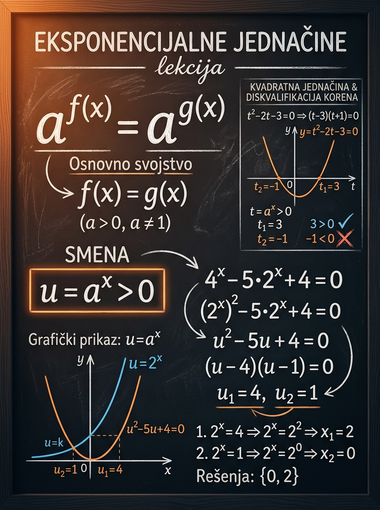

Naučićeš
Kako da brzo odrediš koja metoda rešavanja uopšte dolazi u obzir
Prvi pogled na zadatak mora da otkrije odnos između baza i oblik eksponenata.
Kod ove lekcije najvažnije je da prestaneš da gledaš jednačinu kao gomilu brojeva i da počneš da tražiš obrazac. Nekad treba samo da prepoznaš istu osnovu, nekad da izdvojiš zajednički faktor, a nekad da uvedeš smenu \(u=a^x\) i ceo zadatak pretvoriš u kvadratnu jednačinu. Kada jednom savladaš tu logiku, veliki broj prijemnih zadataka postaje rutinski i pregledan.
Prvi pogled na zadatak mora da otkrije odnos između baza i oblik eksponenata.
Pošto je \(a^x>0\), svaki kandidat \(u \le 0\) automatski otpada, ma koliko lepo delovao u kvadratnoj jednačini.
Kada baze povežeš na vreme, izbegavaš nepotrebne logaritme i štediš dragocene minute.

Najveći pomak dolazi kada shvatiš da se iza eksponencijalnog zapisa često krije obična linearna ili kvadratna jednačina, samo u drugoj promenljivoj.
Rešavaš već poznate obrasce, ali tek pošto pravilno preurediš izraz. Zbog toga je ova lekcija odličan test zrelosti u algebri: ne proverava samo račun, već i sposobnost da vidiš strukturu.
Zadatak iz ove oblasti često izgleda "strašnije" nego što jeste. Onaj ko na vreme prepozna oblik rešava ga kratko; onaj ko krene nasumice lako upadne u nepotrebne račune i izgubi vreme.
Jedna dobra promena oblika često je cela poenta zadatka.
Nisu. Pošto je \(4=2^2\), važi:
To je upravo signal da možeš da uvedeš smenu \(u=2^x\). Ovakva veza između baza je jedan od najvažnijih refleksa za prijemni.
Eksponencijalna jednačina je jednačina u kojoj se nepoznata nalazi u eksponentu. Zato standardni potezi iz linearnih i kvadratnih jednačina ne rade direktno, dok ne dovedeš izraz u pogodniji oblik.
Tipični oblici su:
Važno je da baza zadovoljava uslove \(a>0\) i \(a\neq 1\). Tada je funkcija \(a^x\) strogo monotona, pa je poređenje eksponenata dozvoljeno kad uspeš da napišeš obe strane sa istom osnovom.
Drugim rečima: ne traži odmah rešenje za \(x\), nego prvo traži oblik.
Tek kada važi \(a>0\) i \(a\neq 1\).
Tada je funkcija \(y=a^x\) strogo monotona, pa jednake vrednosti nastaju samo za jednake eksponente. Bez tog uslova zaključak nije opravdan.
Ovo su tri obrasca koja treba da postanu automatska. Svaki ima svoj okidač: ista baza, isti faktor ili kvadratni oblik po \(a^x\).
Ako obe strane mogu da se napišu sa istom osnovom, zadatak se svodi na jednačinu eksponenata. Ovo je najčistiji i najbrži slučaj.
Mini-primer:
Kada više članova sadrži \(a^x\), često je najlakše da ga izdvojiš. Ovde je ključno da pravilno rastaviš članove tipa \(a^{x+1}\), \(a^{x-2}\) i slično.
Mini-primer:
Kada prepoznaš kvadratni obrazac po \(a^x\), uvedi novu promenljivu. Ovo je najčešća prijemna tehnika iz ove lekcije i najčešće mesto za grešku.
Posle rešavanja kvadratne jednačine po \(u\), zadržavaš samo pozitivne vrednosti jer je \(a^x\) uvek strogo pozitivno.
Zato što za svako realno \(x\) i svaku dozvoljenu bazu \(a>0\) važi \(a^x>0\). Eksponencijalna funkcija nikada ne daje nulu niti negativan broj.
Zato negativan koren kvadratne jednačine po \(u\) nije rešenje originalnog eksponencijalnog zadatka.
Ove transformacije nisu ukras. One su alat pomoću kog eksponencijalnu jednačinu prevodiš na poznat teren.
Koristi se kada su baze povezane stepenom, na primer \(4\) i \(2\), ili \(9\) i \(3\).
Ovo je osnova za izdvajanje zajedničkog faktora.
Kada vidiš \(a^{2x}\) i \(a^x\), proveri da li možeš da uvedeš smenu.
Zadržavaš samo \(u=4\), jer \(u=-1\) ne može biti jednako \(a^x\).
Veliki broj grešaka nastaje kada učenik meša pravila za stepene sa pravilima za sabiranje. Eksponenti se sabiraju pri množenju istih osnova, a ne pri običnom sabiranju članova.
Zato što tada obe strane možeš da porediš preko iste osnove 2:
Time eksponencijalni zadatak prelazi u običnu linearnu jednačinu po \(x\).
Ovaj lab namerno pravi kvadratnu jednačinu sa jednim dozvoljenim i jednim nedozvoljenim korenom. Cilj je da izgradiš refleks: posle smene uvek proveri uslov \(u>0\).
Biramo bazu \(a\), pozitivan koren \(u=a^k\) i jedan negativan kandidat. Time dobijamo kvadratnu jednačinu po \(u\), a zatim se vraćamo na \(x\).
Leva, crvenkasta poluosa predstavlja zabranjene vrednosti \(u \le 0\). Zeleni marker je koren koji može da ostane u eksponencijalnoj jednačini, a crveni marker je kandidat koji mora da se odbaci.
Ovo je eksponencijalni zadatak koji se dobija izabranim parametrima.
Posle smene zadatak se svodi na mnogo poznatiji oblik.
Prvo dobijaš kandidate za \(u\), a tek onda proveravaš uslov \(u>0\).
Dozvoljeni koren vraća te na originalnu promenljivu.
To znači da kvadratna jednačina po \(u\) zaista ima taj koren, ali originalna eksponencijalna jednačina ga ne prihvata. Drugim rečima, to je kandidat iz pomoćne jednačine, a ne rešenje početnog zadatka.
Primeri su složeni tako da postepeno grade refleks: od čistog svođenja na istu osnovu, preko izdvajanja faktora, do najvažnije smene \(u=a^x\).
Ovo je najčistiji slučaj. Desna strana je običan broj, ali ga lako prepoznajemo kao stepen broja 3.
Čim si dobio istu osnovu, eksponencijalni deo zadatka je praktično završen.
Ovde nema odmah iste osnove, ali su baze povezane preko broja 2. To je dovoljan signal da sve prevedeš na osnovu 2.
Ovo je tipičan prijemni zadatak: deluje komplikovanije nego što jeste, ali suština je samo u promeni baze.
Dva člana sadrže isti eksponencijalni izraz. Zato prvo razdvoji \(2^{x+1}\) i izdvoji \(2^x\).
Greška koju ovde treba izbeći je zapis \(2^{x+1}=2^x+1\), jer to nije tačno.
Ovo je školski primer za smenu. Pojavljuju se članovi \(2^{2x}\) i \(2^x\), pa je prirodno da uvedeš novu promenljivu.
Negativan koren pripada pomoćnoj kvadratnoj jednačini, ali ne i originalnoj eksponencijalnoj jednačini.
Ovde se smena ne vidi odmah dok ne prevedeš \(4^x\) na osnovu 2. To je tipično ispitno mesto za dobar refleks.
Ovaj primer pokazuje da posle smene nekad ostaje jedno, a nekad dva rešenja. Filter je uvek isti: \(u>0\).
Sledeće greške nisu sitnice. One direktno vode do pogrešnog skupa rešenja ili nepotrebnog gubitka vremena.
Zapis \(2^{x+1}=2^x+1\) je netačan. Pravilno je:
Ako ne vidiš da je \(9=3^2\) ili \(8=2^3\), propuštaš najkraći put do rešenja.
Kod smene \(u=a^x\) negativan koren kvadratne jednačine automatski otpada. To je obavezna provera, ne opcija.
U velikom broju prijemnih zadataka logaritmi nisu potrebni. Dovoljno je prepisati izraz u pametniji oblik.
Na prijemnom se ova tema retko proverava kroz dugu teoriju. Češće dobijaš kratku jednačinu čija je suština da što pre prepoznaš pravi model rešavanja.
Kada taj redosled uđe u naviku, eksponencijalne jednačine postaju jedna od bržih oblasti na testu.
Probaj da prvo sam odrediš metodu, pa tek onda otvori rešenje. To je važniji trening od samog završnog broja.
Diskriminanta je:
Kvadratna jednačina nema realne korene, pa ni originalna eksponencijalna jednačina nema realna rešenja.
Ako umeš da brzo vidiš istu osnovu, zajednički faktor ili smenu \(u=a^x\), onda je najveći deo zadatka već obavljen.
Kada zatvoriš ovu lekciju, cilj je da ti u glavi ostane jasan redosled razmišljanja, a ne samo nekoliko izolovanih zadataka.
Ako baze prevedeš na istu osnovu, eksponencijalni problem često postaje linearan.
Nema potrebe za improvizacijom ako se zadatak lepo uklapa u poznati obrazac.
Ovo je najčešća i najskuplja greška u zadacima sa smenom.
Sledeći logičan korak je lekcija o eksponencijalnim nejednačinama, gde ista logika ostaje na snazi, ali se dodaje pažljivo praćenje smera nejednakosti i monotonosti funkcije.